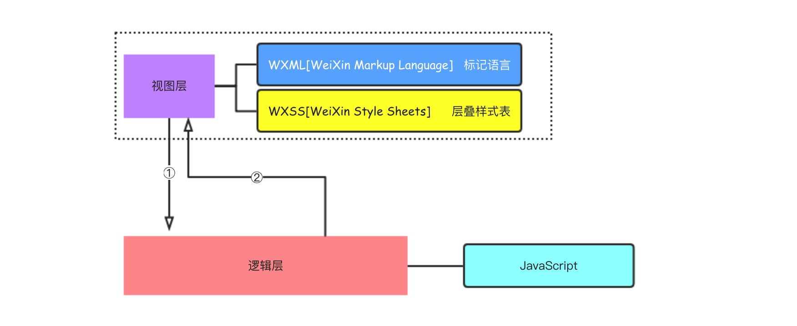
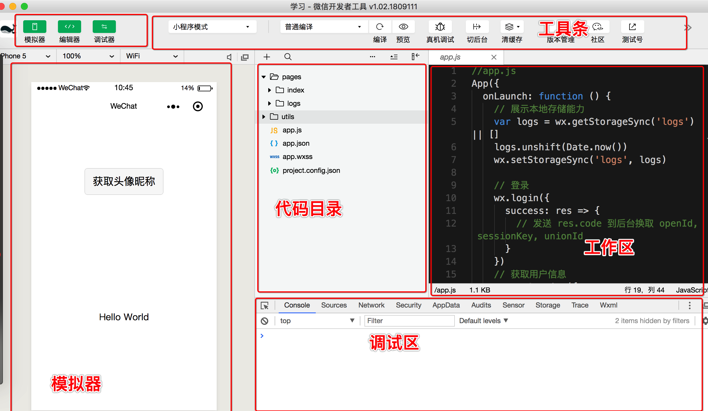

微信小程序基础[02]-小程序框架的文件体系
本文介绍开发微信小程序项目中的体系结构和组成部分。
1.0 微信小程序框架体系
微信小程序框架体系由两部分组成，分别是视图层和逻辑层。
视图层由WXML和WXSS组成，类似于前端开发中的HTML(标签)和CSS(样式)。
逻辑层是一套运行在本地JavaScript引擎中的JavaScript代码，负责调用数据处理方法来驱动视图更新。
微信小程序的整体开发流程非常接近前端HTML + CSS + JavaScript的模式,需要注意的是在小程序开发中没有DOM的概念的，本地也没有document和window等对象，更不能使用jQuery等类似的框架。
微信小程序中视图层和逻辑层的交互主要通过数据绑定和事件响应来实现，采用了单向绑定的机制。
微信小程序的单向绑定机制
单向绑定机制需要先将逻辑层和视图层的数据与事件进行绑定，当页面需要修改的时候，逻辑层只需要调用特定的setData方法修改已经绑定的数据即可，这时候框架会自动触发WXML来重新渲染整个视图，当框架接收到用户的交互操作时会根据视图层绑定的事件执行逻辑层中对应的事件函数以进行响应。
2.0 微信小程序的结构
微信小程序的开发工具下载并安装之后，我们可以来开始创建一个新的项目，如果没有appID那么可以选择使用测试账号。
项目初始化完成后，我们能够看到下面的界面。
整个开发界面大概可以分成工具选项区、模拟器显示区、调试区、代码目录和工作区，其中工作区、模拟器显示区和调试区均可以选择在关闭在打开中进行切换，这里我们主要关注项目初始化后的代码目录。
打印项目文件的目录结构(使用命令行操作，具体请参考网络编程系列 Mac系统中Tree的使用)如下。
1 | . |
在一个完成的小程序项目中，所有的文件可以划分为**小程序框架主体文件和页面文件**两类。
① 小程序框架主体文件是系统级文件，每个项目中只有一份，他们分别是：
app.js文件 控制小程序整体逻辑，主要用于注册小程序全局实例。 app.json文件 控制小程序整体配置，配置小程序整体设置。 app.wxss文件 控制小程序整体样式，对所有页面的布局文件都有效。 project.config.json文件 整个项目的配置信息
② 页面文件 通常由四个文件组成，分别是.wxml（结构）.wxss（样式）.js（逻辑）和.json（配置）。框架规定，同一个页面的这四个文件必须具有相同的路径和文件名，在编译的时候它们将自动关联。在初始化后的项目中，pages文件夹下面拥有两个默认的页面，分别是index页面和logs页面。